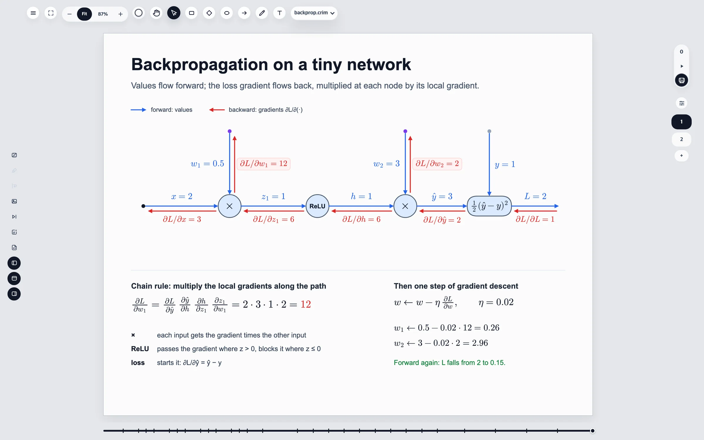
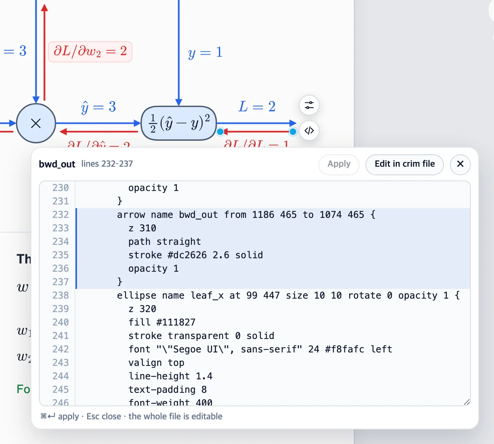
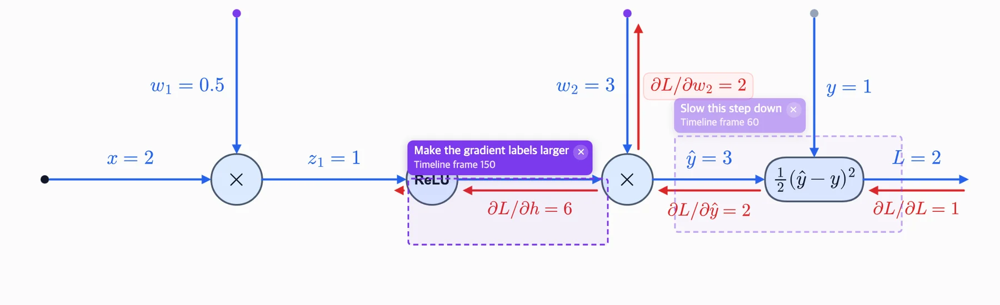
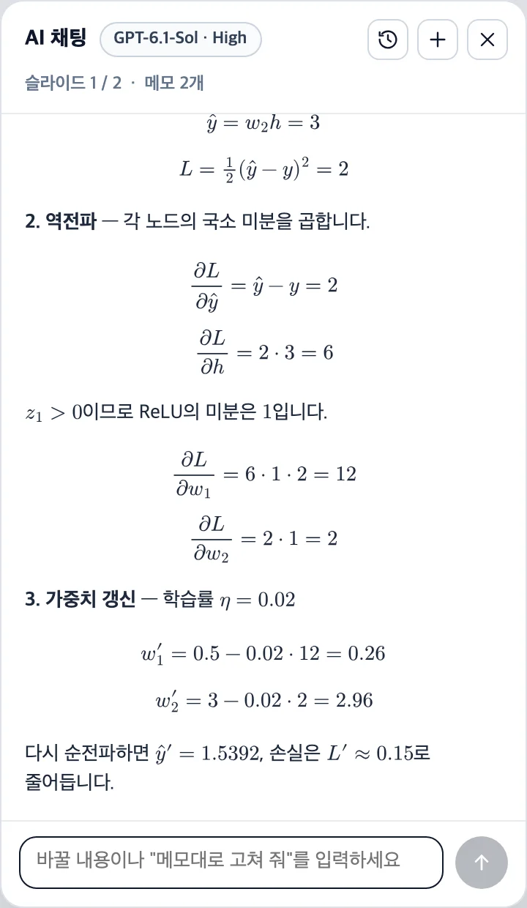
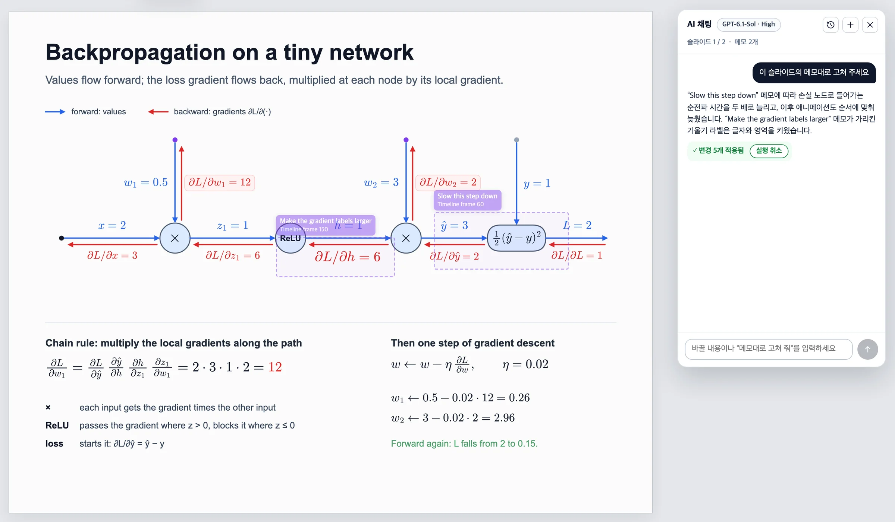

Explainer slides × timeline animation 설명 슬라이드 × 타임라인 애니메이션
Explain it on a slide.
Then make it move.
슬라이드로 설명하고,
그대로 움직이게.
Crimate is a desktop editor for explainer slides and 2D animation. Draw on a canvas the way you would in PowerPoint, animate the same objects on each slide's timeline, and keep the whole deck as plain .crim text that you — or an AI — can read and edit. Or just ask the built-in AI chat to change the slide.
Crimate는 설명 슬라이드와 2D 애니메이션을 함께 만드는 데스크톱 편집기입니다. PowerPoint처럼 캔버스에 그리고, 같은 오브젝트를 슬라이드마다 타임라인에서 움직이고, 덱 전체를 사람과 AI가 함께 읽고 고칠 수 있는 .crim 텍스트로 저장합니다. 내장 AI 채팅에 말로 고쳐 달라고 해도 됩니다.
In private development · desktop first 비공개 개발 중 · 데스크톱부터

Animation애니메이션
Every stroke is one line of animation 모든 선이 애니메이션 한 줄
This is examples/backprop.crim playing in the editor. The forward pass draws on along its arrows, then the gradients flow back. Each arrow is drawn on by one strokeProgress line, and each label fades in with one opacity line.
편집기에서 재생한 examples/backprop.crim입니다. 순전파가 화살표를 따라 그려지고, 이어서 기울기가 거꾸로 흐릅니다. 화살표는 strokeProgress 한 줄로 그려지고, 라벨은 opacity 한 줄로 나타납니다.
- Each slide plays its own range, at real time.슬라이드마다 자기 구간을 실제 시간대로 재생합니다.
- Curved arrows draw on along their path, head first.곡선 화살표도 경로를 따라 머리부터 그려집니다.
- Step from one start point to the next with a click or a key.클릭이나 키 하나로 다음 시작 지점까지 넘깁니다.
Features기능
Built for explaining설명하기 위해 만든 도구
A clean canvas by default. Depth when you ask for it.기본 화면은 캔버스뿐. 필요한 기능은 필요할 때.
-
Canvas-first editing캔버스 중심 편집
Rectangles, ellipses, arrows, freehand paths, text and images. Arrows stay attached to the shapes they connect, and tools appear only when you reach for them.사각형, 타원, 화살표, 자유 곡선, 텍스트, 이미지. 화살표는 연결한 도형에 붙어 있고, 도구는 필요할 때만 나타납니다.
-
A timeline on every slide슬라이드마다 타임라인
Each slide plays its own range. Move, turn, fade, and draw strokes on along their path — then step through it one start point at a time.슬라이드마다 자기 재생 구간이 있습니다. 이동, 회전, 페이드, 경로를 따라 그리는 선까지, 시작 지점을 하나씩 넘겨 가며 볼 수 있습니다.
-
Math that looks right제대로 보이는 수식
Labels typeset with MathJax, mixed with words or on their own, and kept at the same size on every device.MathJax로 조판한 라벨을 글과 섞거나 단독으로 씁니다. 기기가 달라도 같은 크기로 보입니다.
-
A file you can read읽을 수 있는 파일
A deck is plain, declarative
.crimtext. Diff it, review it, generate it — the canvas and the file stay in sync both ways.덱은 선언적인.crim텍스트입니다. diff로 비교하고, 리뷰하고, 생성하세요. 캔버스와 파일은 양쪽으로 맞춰집니다. -
An AI that edits the slide슬라이드를 고치는 AI
Box what should change and leave a note, then ask the built-in chat — on your own ChatGPT plan — to fix it. Each change is one undo step.고칠 곳에 메모를 남기고 내장 채팅에 고쳐 달라고 하세요. 내 ChatGPT 요금제로 동작하고, 변경은 실행 취소 한 번으로 되돌립니다.
-
Export from the canvas캔버스 그대로 내보내기
A slide as PNG, its animation as WebM — recorded from the same canvas you edit on.슬라이드는 PNG로, 애니메이션은 WebM으로. 편집하는 그 캔버스에서 그대로 녹화합니다.
.crim
The canvas and the file are the same document 캔버스와 파일은 같은 문서
Every slide, object, animation and note lives in one text file. Select an object and choose View in crim file to see its lines highlighted in a small editor beside it. Change a value, press ⌘↵, and the canvas updates in one undo step. 슬라이드, 오브젝트, 애니메이션, 메모가 모두 텍스트 파일 하나에 들어 있습니다. 오브젝트를 선택하고 View in crim file을 누르면 그 줄이 강조된 작은 편집기가 옆에 열립니다. 값을 고치고 ⌘↵를 누르면 캔버스에 바로 반영되고, 실행 취소 한 번으로 되돌릴 수 있습니다.
Prefer text? Edit in crim puts the whole file where the canvas was. A mistake shows its line and leaves the canvas untouched. 텍스트가 더 편하다면 Edit in crim으로 캔버스 자리에서 파일 전체를 편집하세요. 문법이 틀리면 그 줄을 알려 주고 캔버스는 그대로 둡니다.
slide by-hand "Backpropagation on a tiny network" {
scene {
arrow name fwd_yhat from 820 452 to 952 452 {
stroke #2563eb 2.6 solid
}
text name fwd_yhat_label at 859 415 size 56 27 {
content "\\(\\hat y = 3\\)"
}
}
animate {
@fps 30
@range 0f 252f
animate fwd_yhat.strokeProgress 0 -> 1 from 58f to 70f ease in-out
animate fwd_yhat_label.opacity 0 -> 1 from 66f to 76f ease out
}
}
AI annotate
Point at it. Your AI reads the rest. 가리키면, 나머지는 AI가 읽습니다.
Turn on AI annotate, draw a box over what needs work and write a comment. On an animated slide the note belongs to the frame on screen: it says Timeline frame N, fades on other frames, and puts a dot on the slide timeline. AI annotate를 켜고, 고칠 곳에 사각형을 그리고 코멘트를 적으세요. 애니메이션이 있는 슬라이드에서는 메모가 화면에 보이던 프레임에 속합니다. Timeline frame N이 표시되고, 다른 프레임에서는 흐려지며, 슬라이드 타임라인에 점이 찍힙니다.
Notes never render or export. They are saved in the file, with the frame and the objects under them, so an agent knows exactly what you meant: 메모는 화면 출력이나 내보내기에 나오지 않습니다. 프레임과 그 아래 오브젝트 이름과 함께 파일에 저장되므로, 에이전트가 무엇을 말하는지 정확히 압니다.
note at 845 400 size 269 115 frame 60f
over edge_yhat, node_loss, fwd_yhat, node_loss_label
"Slow this step down"
note at 531 450 size 237 80 frame 150f
over edge_h, node_relu, bwd_h, bwd_h_label, …
"Make the gradient labels larger"
Chat with AI
Ask for a change.
Watch the slide follow.
말로 고치고,
슬라이드에서 바로 확인.
Connect your ChatGPT account from the light in the top bar — Crimate signs in with ChatGPT and uses your own plan, no API key — and pick the model and reasoning effort. Then open Chat with AI beside the canvas. It reads the slide on screen as .crim text, notes included, and answers with edits that land on the slide as soon as the reply ends.
상단의 신호등에서 ChatGPT 계정을 연결하세요. Crimate는 Sign in with ChatGPT로 로그인해 내 요금제를 쓰므로 API 키가 필요 없습니다. 모델과 추론 강도를 고른 뒤 캔버스 옆에서 AI 채팅을 여세요. AI가 화면의 슬라이드를 메모까지 .crim 텍스트로 읽고, 답이 끝나면 고친 내용이 바로 슬라이드에 반영됩니다.
- “Fix it as my notes say” turns your AI notes into changes — or just say what you want, notes or not.“메모대로 고쳐 주세요” 한마디로 메모가 변경이 됩니다. 메모가 없어도 원하는 대로 말하면 됩니다.
- One reply is one undo step. Only the slide on screen changes — never another slide, a file on disk, or Crimate itself — and nothing is saved until you save.답 하나가 실행 취소 한 번입니다. 바뀌는 것은 화면의 슬라이드뿐이고 다른 슬라이드, 디스크의 파일, Crimate 자체는 건드리지 않으며, 저장하기 전까지는 저장되지 않습니다.
- Formulas in replies are typeset like the slide's.답 속의 수식도 슬라이드처럼 조판됩니다.
- Conversations save themselves with their file — reopen, rename or delete them any time.대화는 파일별로 자동 저장되고, 언제든 다시 열거나 이름을 바꾸거나 지울 수 있습니다.
- The chat's interface is Korean for now; it answers in the language you write in.채팅 화면은 한국어이고, AI는 내가 쓴 언어로 답합니다.


Status현황
Where Crimate is todayCrimate의 지금
Crimate is in active, private development. This is the order things are coming in.Crimate는 비공개로 활발히 개발 중입니다. 앞으로의 순서는 이렇습니다.
-
Next다음
Desktop · macOS and Windows데스크톱 · macOS와 Windows
Installers for the editor on this page — the same app, with native open and save.이 페이지의 편집기를 설치 파일로. 같은 앱에 운영체제의 열기·저장 창을 씁니다.
-
Planned계획
Web웹
The editor already runs in the browser while it's developed. A public version comes once files can be saved in every browser.편집기는 개발 중에 이미 브라우저에서 돌아갑니다. 모든 브라우저에서 파일을 저장할 수 있게 되면 공개합니다.
-
Later나중
Android
First as a viewer and player for decks made on the desktop.먼저 데스크톱에서 만든 덱을 보고 재생하는 앱으로.
Built with사용 기술 TypeScriptReactElectronCanvas 2DMathJaxOpenAI Responses API